1. Általános információk
Az alkalmazás a legtöbb korszerű, automatikusan frissülő böngészőn fut (pl. Firefox, Chrome). Internet Explorer esetén a szükséges minimális verziószám 11.
2. Fogalmak és rövidítések
|
Rövidítés |
Jelentés |
|
ÁNYK |
Általános nyomtatványkitöltő alkalmazás |
|
eSZJA portál |
A NAV WEB alapú online bizonylat kitöltést biztosító alkalmazása |
|
KR |
Központi Rendszer/Ügyfélkapu – https://magyarorszag.hu |
|
MOHU |
|
|
NAV honlap |
3. Bejelentkezés
Az eSZJA portál elérhető a NAV honlapjáról, a Központi Rendszerből, valamint a nyitóoldal URL-jének böngészőbe történő begépelésével is.
A belépett felhasználó – amennyiben más magánszemély adózónak is képviselője – a profilválasztó oldalra jut, ellenkező esetben pedig a saját munkaterületét/profil oldalát látja.
3.1. Bejelentkezés Központi Rendszeren keresztül
A portál a Központi Rendszerben a ’Személyi jövedelemadó bevallás’ menüponton keresztül érhető el.
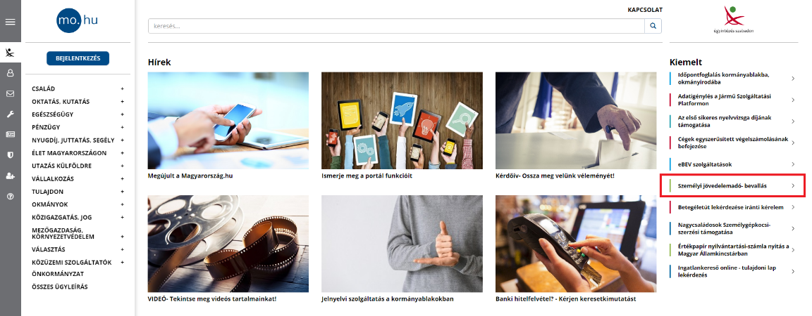
3.2. Bejelentkezés a NAV honlapján keresztül
A NAV honlapján az SZJA oldalon ( http://nav.gov.hu/szja/szja )
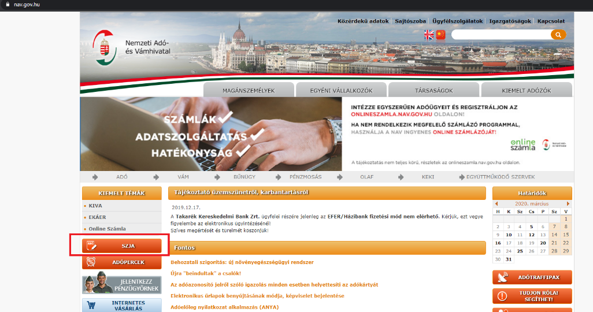
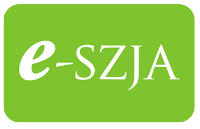
gombra kattintva érhető el a portál.
Ez az oldal – azon kívül, hogy általános információkat tartalmaz –, biztosítja a felhasználó bejelentkezését is.
3.2.1. Ügyfélkapu regisztráció
A „NINCS MO.HU REGISZTRÁCIÓM” gombra kattintva egy további oldal jelenik meg a belépéshez szükséges regisztráció lehetséges módjairól.
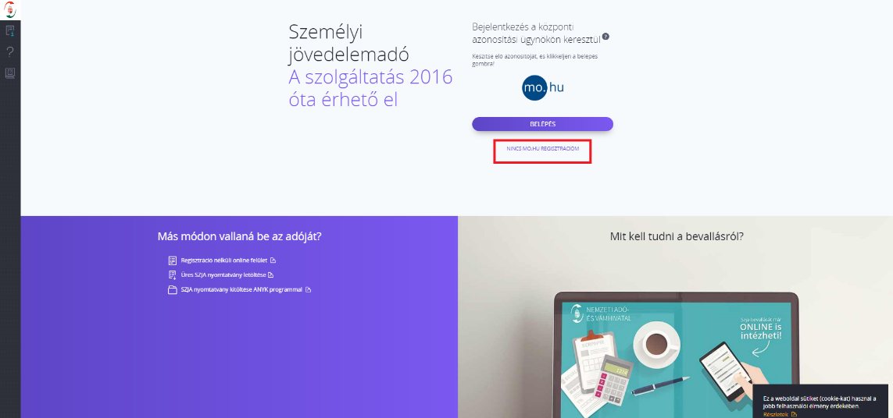
3.2.2. Regisztráció nélküli online felület
A „Más módon vallaná be az adóját?” blokkban található a „Regisztráció nélküli online felület” link.
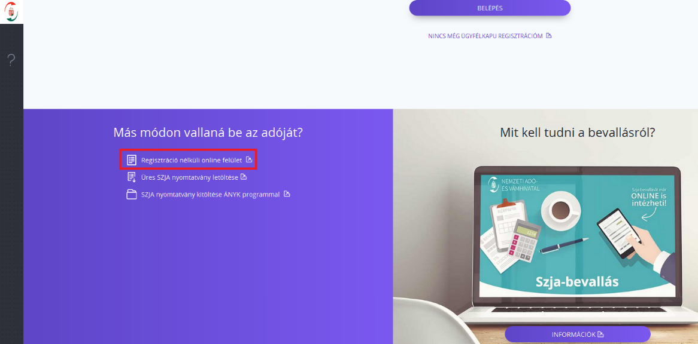
A linkre kattintva a felhasználó átirányításra kerül az alábbi weboldalra: https://webnyk.nav.gov.hu/app/publication. Ezen az oldalon az alkalmazást egyszerű kitöltő programként használhatja. Ebben az esetben a felhasználó saját gépére tudja lementeni, valamint onnan visszatölteni és kinyomtatni az elkészített bevallások állományait.
3.2.3. Közvetlen portálos bejelentkezés
A portál alkalmazás az alábbi URL-en keresztül érhető el: https://eszja.nav.gov.hu .
3.3. Üres SZJA nyomtatvány letöltése
A „Más módon vallaná be az adóját” blokkban található az „Üres SZJA nyomtatvány letöltése” link. A linkre kattintva érhető el az az oldal, ahonnan az üres bevallás letölthető PDF formátumban.
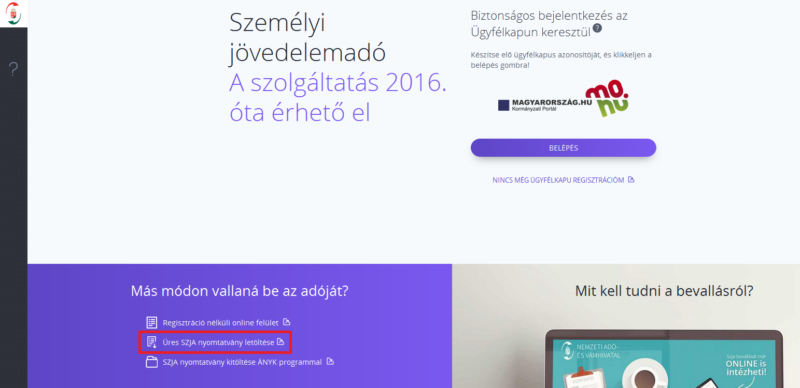
3.4. SZJA nyomtatvány kitöltése ÁNYK programmal
A „Más módon vallaná be az adóját” blokkban található a „SZJA nyomtatvány kitöltése ÁNYK programmal” link. A linkre kattintva tölthető le az ÁNYK-hoz tartozó bevallási csomag.
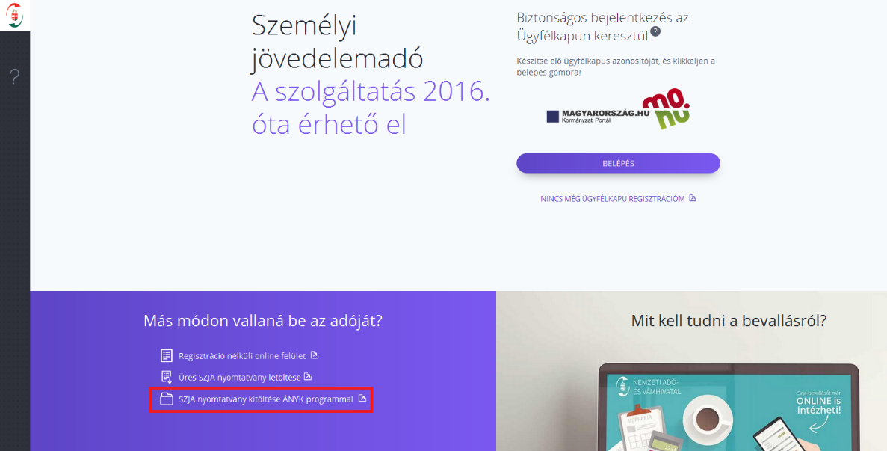
3.5. Mit kell tudni a bevallásról?
„Mit kell tudni a bevallásról?” blokkban található az Információk gomb. A gombra való kattintás a NAV http://nav.gov.hu/nav/ado/szja/szja oldalára navigál.
3.6. Hibaüzenetek bejelentkezéskor
Első
belépéskor „ A
rendszer használatához az Ön
adóazonosító jelét
regisztrálnunk
kell. A regisztráció a legelső
belépéskor
történik és egy-két percet
vesz
igénybe. Kérjük,
néhány perc
elteltével lépjen
be újra.”
üzenet jelenik
meg.Ismételt
bejelentkezéssel
lehetővé válik a portál
használata.
Ha az
adóazonosító jel nem
érvényest: „Adóazonosító
jele érvénytelen. Kérjük
jelezze a
problémát elektronikus úton a NAV
felé.”
Ha a KAÜ nem szolgáltatja, vagy
hiányosan
szolgáltatja a név adatokat: „Név
adatainak rendezése szükséges a
belépés érdekében.
Kérjük
jelezze a problémát
elektronikus úton a NAV felé.”
Ha a
tárhely lekérdezés nem ad vissza
tárhelyinformációt: „A
tárhelye nem áll rendelkezésre a
belépéshez. Amennyiben most nyitott
ügyfélkaput, akkor kérjük
próbálja meg
később a bejelentkezést. Ellenkező esetben
kérjük jelezze e problémát
elektronikus
úton a NAV felé.
Ha a KAÜ nem
szolgáltatja az
adóazonosító
jelet a válaszában: „Sikertelen
azonosítás. Kérjük jelezze e
problémát elektronikus úton a NAV
felé.”
A portálra 18 év alatt
személy nem tud
bejelentkezni, ekkor a „A
szolgáltatás használatának
feltétele a
betöltött 18. életév.”
hibaüzenet jelenik meg.
Technikai hiba esetén a „Technikai hiba. Kérjük, hogy a bejelentkezést próbálja meg egy későbbi időpontban újra.” üzenet jelenik meg.
3.7. Közös funkciók
3.7.1. Szalagmenü
A szalagmenüben látható a belépett felhasználó neve és adóazonosítója, innen érhető el az Aktuális bevallás lekérése funkció, a Dokumentumok, Értesítések és egy külön gombon a kilépés funkció.
Képviselő esetén a belépett felhasználó és a kezelt profil is megjelenik a könnyebb kezelhetőség érdekében. A kezelt profilra kattintva a képviseltek oldalra juthatunk vissza. A kilépés funkció ez esetben is külön gombon érhető el.

3.7.2. Bal oldali menü
A Főoldal bal felső sarkához húzott egérrel érhető el a „SEGÍTŐ INFORMÁCIÓK” link. A linkre kattintva a következő választási lehetőségek közül választhat:
· Bejelentés fogadás
· Írjon nekünk!
· Ügyfélszolgálatok
· Felhasználói kézikönyv.
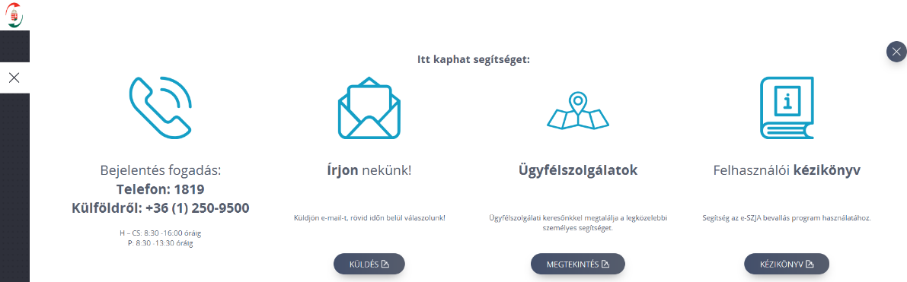
Az Írjon nekünk alatt találtható Küldés gomb a http://nav.gov.hu/nav/e-ugyfsz/levelkuldes oldalra navigál.
Az Ügyfélszolgálatok alatt található „MEGTEKINTÉS” gombra való kattintás a NAV ügyfélszolgálati keresőjére - http://nav.gov.hu/nav/ugyfelszolg - navigál.
A „Felhasználói kézikönyv” jelen dokumentációra mutat.
A bal oldali menüben érhető el az „Akadálymentes használatról” menüpont.
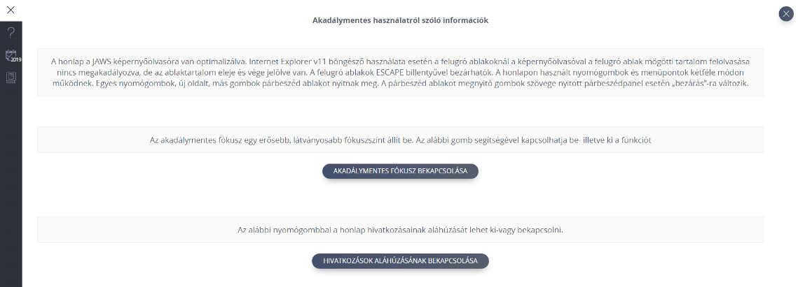
Ebben a menüpontban található egy olyan funkció, mely egy erősebb, látványosabb fókuszszínt állít be. Az „Akadálymentes fókusz bekapcsolása” gombbal lehet aktiválni és az „Akadálymentes fókusz kikapcsolása” gombbal pedig kikapcsolni a funkciót.
A másik funkcióval a honlap hivatkozásainak aláhúzását lehet ki-vagy bekapcsolni.
A „Jelmagyarázat” a bal oldali menüsáv eleme, mely tartalmazza a felületen található ikonok jelmagyarázatát és a hasznos billentyűkombinációk listáját.
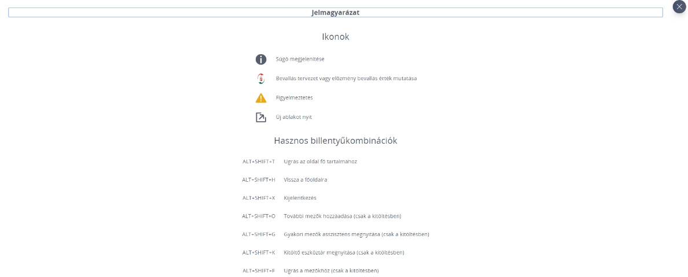
3.7.3. Menüsáv a lap alján
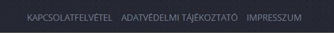
· A Kapcsolatfelvétel a http://nav.gov.hu/nav/kapcsolat oldalra,
· az Adatvédelmi tájékoztató a http://nav.gov.hu/nav/adatvedelem/adatvedelem.html oldalra,
· az Impresszum pedig a http://nav.gov.hu/nav/impresszum/impresszum.html oldalra navigál.
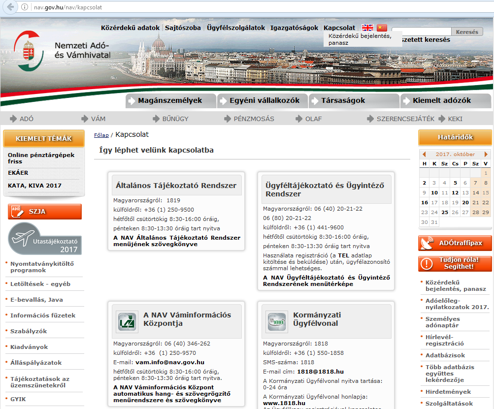
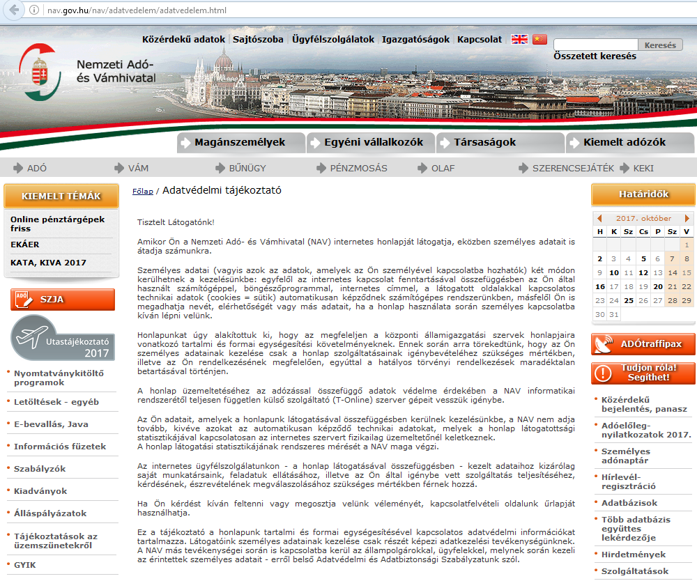
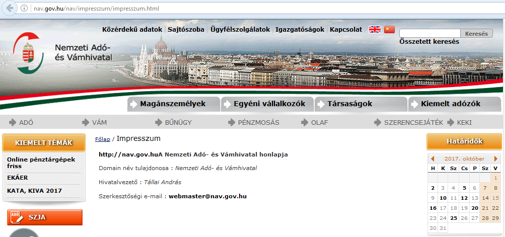
4. Főoldal
A Főoldalon jelenik meg a kiválasztott adózó aktuális bevallása vagy tervezete, ill. 1+1%-os felajánlása. A nyomógombok aktuális feliratai, valamint az általuk végrehajtott tevékenységek a megjelenített elemek állapotától függenek. Az oldalon – jogosultság függvényében – csak SZJA és/vagy EGYSZA elemek jelennek meg.
4.1. „Nincs tervezet” profil
Az ügyfélnek nem érkezett tervezete a NAV-tól, mert
· már beadta a bevallását,
· vagy a tervezetét módosította, majd törölte a bevallását.
A Profil oldalon az „Önnek most nincs jóváhagyandó adóbevallása. Tájékozódjon az értesítései, vagy a dokumentumai között!” felirat látható.
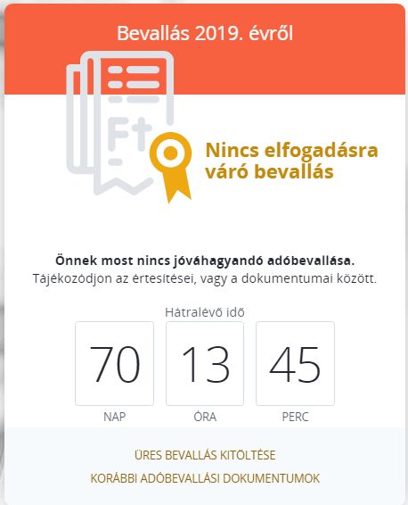
Az „ÜRES BEVALLÁS KITÖLTÉSE” linkre való kattintással elkészíthető a bevallás. A „KORÁBBI ADÓBEVALLÁSI DOKUMENTUMOK” link az Adóbevallási_dokumentumok oldalra navigál át. Itt, amennyiben van törölt tervezete és/vagy bevallása, azokból kiindulva is készíthet bevallást, ill. visszaállíthatja a tervezetét.
4.2. „Tervezet megtekintése” profil
A legtöbb ügyfél ezzel találkozik az első belépést követően. Ez esetben az ügyfélnek a tervezete elkészült és a NAV kihelyezte a portálra.
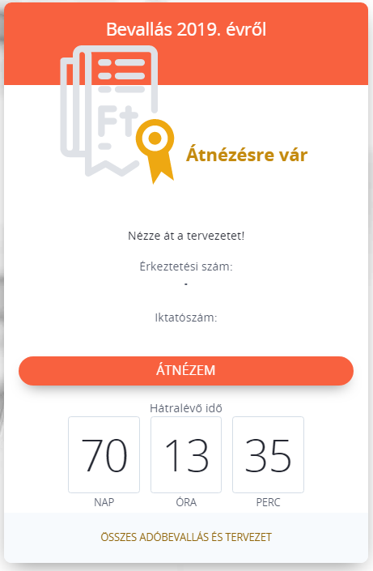
A Profil oldalon a „Nézze át a tervezetet!” felirat látható.
Az „ÁTNÉZEM” gombra kattintva a tervezet megtekinthető. Az „ÖSSZES ADÓBEVALLÁS ÉS TERVEZET” linkre kattintva az Adóbevallási dokumentumokra lehet navigálni.
4.3. „Elfogadott tervezet” profil
Elfogadott a tervezet, ha az ügyfél jónak találta és el is fogadta.
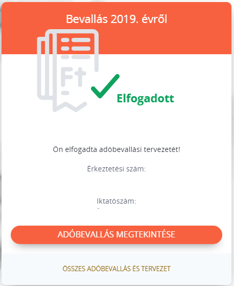
A Profil oldalon az „Elfogadott” státusz alatt az „Ön elfogadta adóbevallási tervezetét!” felirat látható.
4.4. „Szerkesztés folytatása” profil
Az ügyfélnek van szerkeszthető bevallása. Ez akkor fordul elő, ha úgy döntött, hogy módosítja a tervezetet, vagy korábbi bevallásból kiindulva új bevallást készít, és a bevallás még került beadásra.
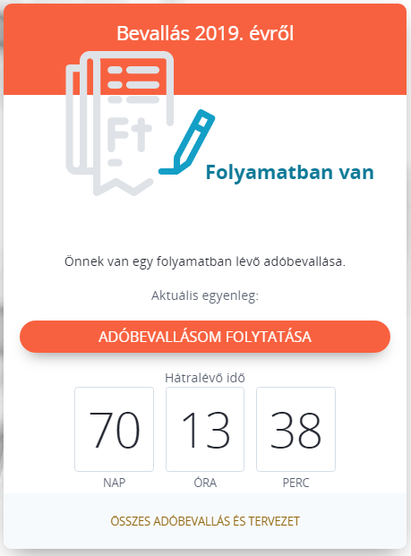
A Profil oldalon a státusz alatt az „Önnek van egy folyamatban lévő adóbevallása” felirat látható.
Az „ADÓBEVALLÁSOM FOLYTATÁSA” gombra kattintva a szerkesztheti bevallását, az „ÖSSZES ADÓBEVALLÁS ÉS TERVEZET” linkre kattintva az adóbevallási dokumentumokat tekintheti meg.
4.5. „Sikeres benyújtás” profil
A bevallást az ügyfél véglegesítette (beadta).
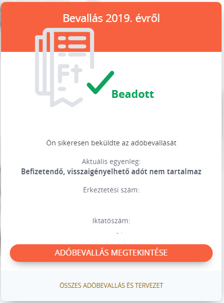
A Profil oldalon a státusz alatt az „Ön sikeresen beküldte az adóbevallását” felirat látható.
Az „ADÓBEVALLÁS MEGTEKINTÉSE” gombra kattintva a kitöltő modulba jut, az „ÖSSZES ADÓBEVALLÁS ÉS TERVEZET” linkre kattintva az adóbevallási dokumentumokat tekintheti meg.
4.6. Tartozásos tervezet” profil
Az ügyfél elfogadta a tervezetet, melyen van olyan adónem, amelyhez befizetendő adó tartozik, és ez elektronikus úton még nem került kiegyenlítésre. A Profil oldalon az „Önnek a bevallásból származó befizetendő adója keletkezett! Kérjük, mielőbb rendezze a NAV felé!” felirat látható.
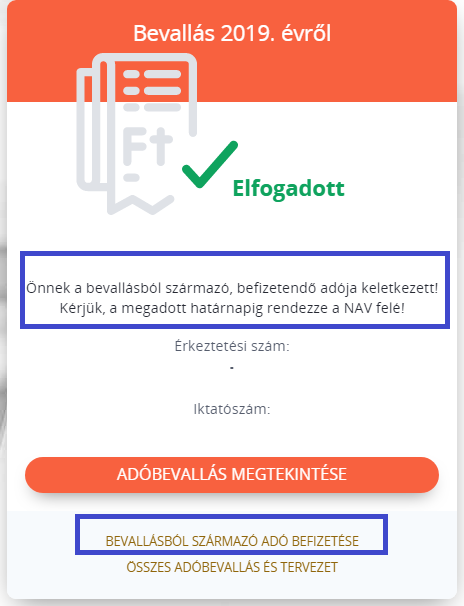
A „BEVALLÁSBÓL SZÁRMAZÓ ADÓ BEFIZETÉSE” linkre kattintva – amennyiben saját magunk nevében járunk el - megjelennek a befizetéssel érintett adónemek, ill. a hozzájuk kapcsolódó összegeket mutató adatlap. Itt lehetőség van a ténylegesen fizetendő összegek beállítására, ezt követően pedig bankkártyás fizetés indítására.
Ahogy a rendszer is jelzi, a fizetés indítása után meg kell várni, hogy a fizetési tranzakció teljes körűen lezajlódjék, különben a fizetés sikertelen lesz. A fizetésről utólag értesítést is kapunk.
4.7. „Tartozásos bevallás” profil
Az ügyfél a bevallást véglegesítette, és a bevallásban van olyan adónem, amelyhez befizetendő adó tartozik, és ez elektronikus úton még nem került kiegyenlítésre.
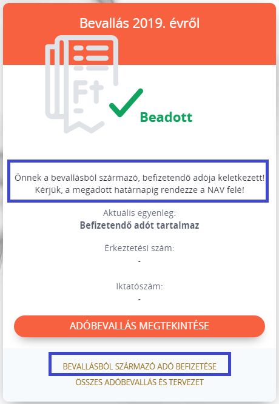
A Profil oldalon a státusz alatt az „Önnek a bevallásból származó befizetendő adója keletkezett! Kérjük, mielőbb rendezze a NAV felé!” felirat látható.
A „BEVALLÁSBÓL SZÁRMAZÓ ADÓ BEFIZETÉSE” linkre kattintva – amennyiben saját magunk nevében járunk el - megjelennek a befizetéssel érintett adónemek, ill. a hozzájuk kapcsolódó összegeket mutató adatlap. Itt lehetőség van a ténylegesen fizetendő összegek beállítására, ezt követően pedig bankkártyás fizetés indítására.
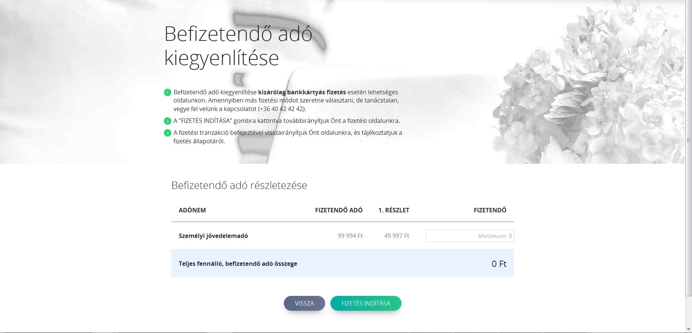
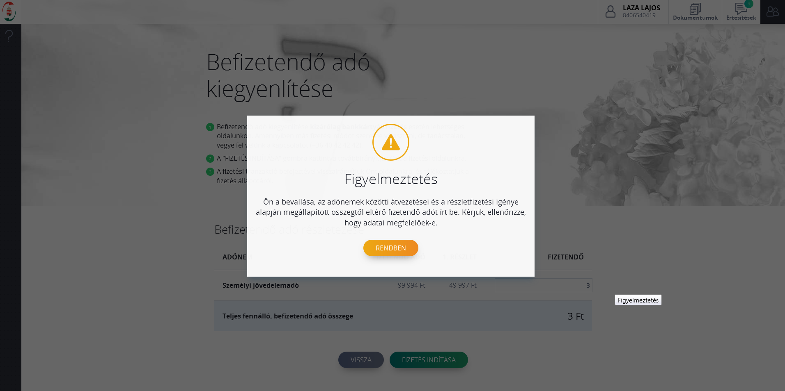
Ahogy a rendszer is jelzi, a fizetés indítása után meg kell várni, hogy a fizetési tranzakció teljes körűen lezajlódjék, különben a fizetés sikertelen lesz. A fizetésről utólag értesítést is kapunk.
4.8. SZJA bevallás lekérése
Ez a funkció a NAV által nyilvántartott utolsó érvényes, feldolgozott, adott adóévre vonatkozó SZJA-bevallás lekérésére szolgál. Elsősorban akkor hasznos, amikor bevallásunk papír alapon vagy az Ügyfélkapun keresztül került beadásra, és meg kívánjuk azt tekinteni vagy önellenőrzést, helyesbítést kívánunk beadni arra vonatkozóan. Nem alkalmas a nem 53-as nyomtatványon (pl.alt="" M29-es munkáltatói nyomtatványon) beadott dokumentumok lekérésére és megjelenítésére.
A Profil oldalon, a
szalagmenüben az  gombra
kattintva kezdeményezhető az aktuális
bevallási adatok lekérése.
gombra
kattintva kezdeményezhető az aktuális
bevallási adatok lekérése.
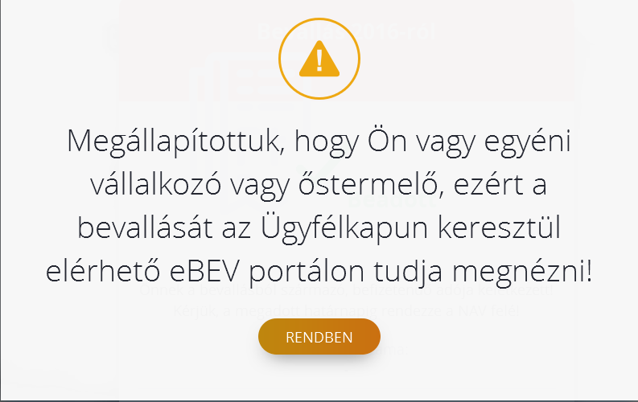
:
Egyéb esetben pedig a Lekérés funkció indul el:
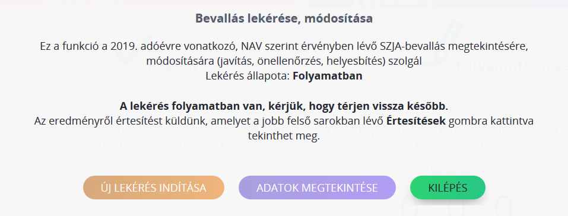
A Lekérés állapota értékei az alábbiak lehetnek:
o Nincs érvényes lekérés (az első lekérés indítása előtt)
o Folyamatban (amikor a felhasználó a lekérést már elindította, de annak kiszolgálása még folyamatban van)
o Megnézhető (megérkezett az eredmény, van érvényes bevallás)
o Nincs érvényes bevallás (megérkezett az eredmény, nincs érvényes bevallás)
o Hiba a folyamatban (technikai hiba történt, újra kell/lehet indítani a lekérést)
Az „Új lekérés indítása” gombra kattintva elindul az adatlekérési folyamat. Az eredmény nem azonnal áll rendelkezésre, megérkezéséről értesítést kapunk (a lekérés indítását követően tehát célszerű kilépni a funkcióból, majd az értesítést követően ismételten belépni). Az ismételt belépést követően az „Adatok megtekintése” gomb abban az esetben aktív, ha az eredmény megérkezett (a lekérés állapota megnézhető).
Felhasználó üzenetek az adatlekérés során az egyes állapotoknak megfelelően:
- nincs érvényes lekérés állapot esetén:
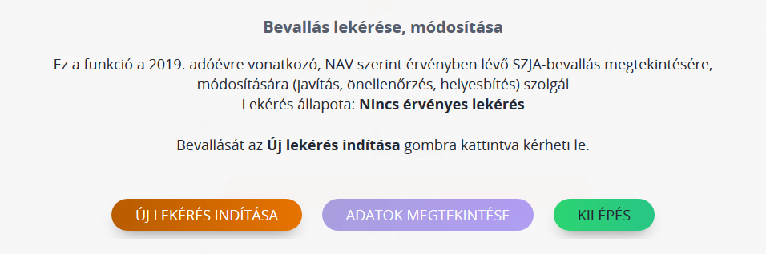
Ekkor az „Új lekérés indítása” és a „Kilépés” gomb aktív.
- folyamatban lekérés állapot esetén:
Ekkor csak a „Kilépés” gomb aktív.
- megnézhető lekérés állapot esetén:
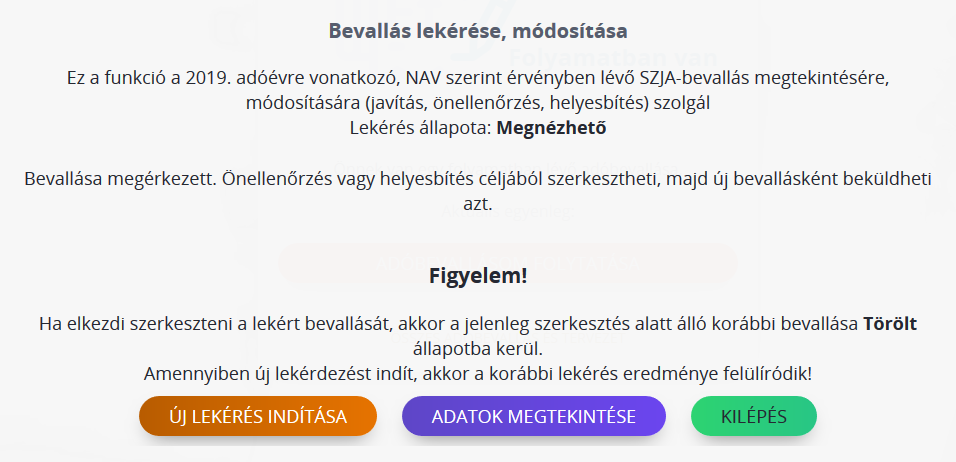
Ez esetben mindhárom gomb aktív.
- nincs érvényes bevallás lekérés állapot esetén:
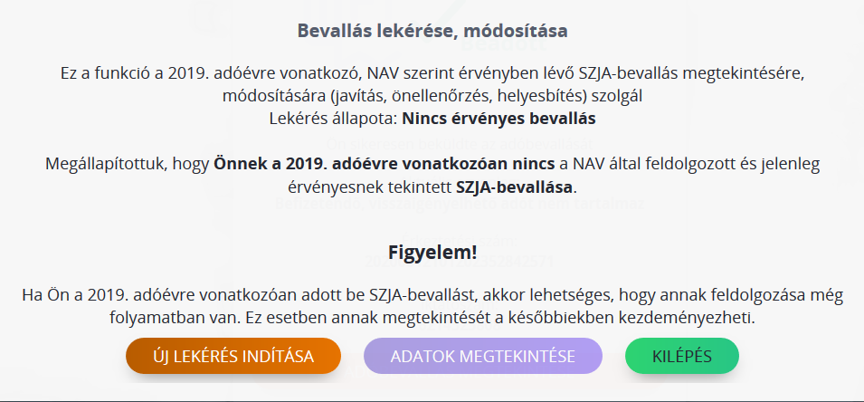
Ekkor az „Új lekérés indítása” és a „Kilépés” gomb aktív.
- hiba a folyamatban lekérés állapot esetén:
Ekkor az „Új lekérés indítása” és a „Kilépés” gomb aktív.
Sikeres lekérdezés esetén a lekérés megnézhető állapotú lesz, és az értesítések között egy, a lekérdezés sikeres kiszolgálására utaló tájékoztatás jelenik meg.
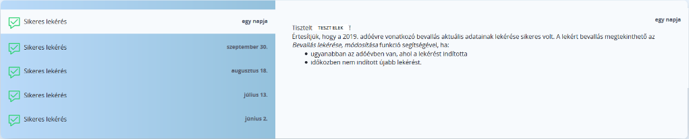
Az adatlekérést követően, ha a lekérés állapota megnézhető, akkor megtekinthető a bevallás, ill. elvégezhető a bevallás önellenőrzése, helyesbítése.
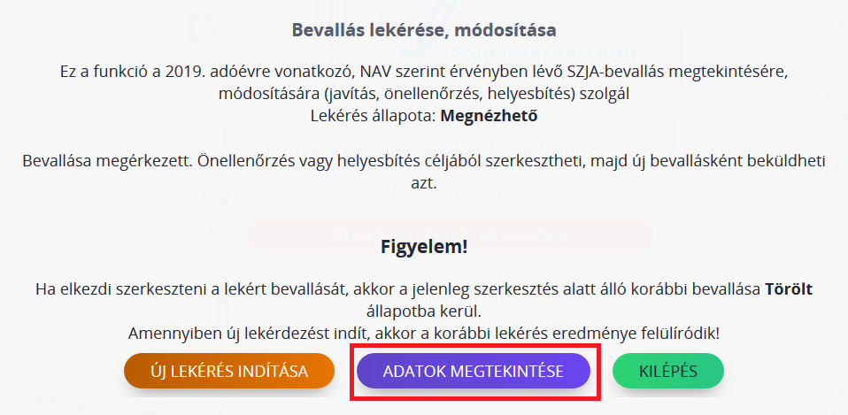
Az Adatok megtekintése gomb megnyomása után a kitöltőben van lehetőség a bevallás önellenőrzésére ill. helyesbítésére.
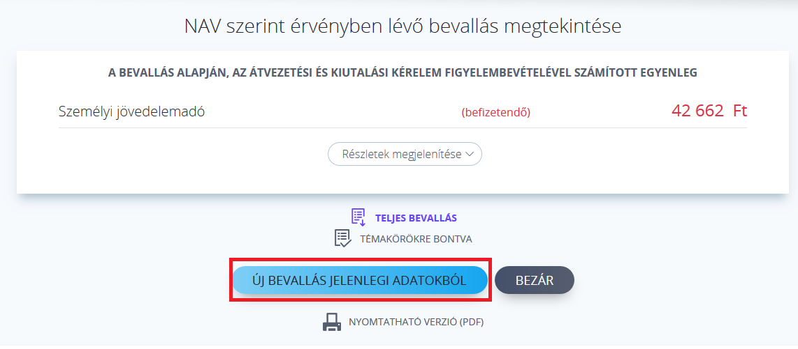
Bevallás önellenőrzése esetén lehetőség nyílik támogató funkció igénybevételére.
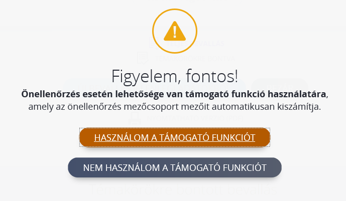
Amennyiben a
„HASZNÁLOM A TÁMOGATÓ
FUNKCIÓT” linkre kattintunk, a
betöltődött bevallásban az
Önellenőrzés, helyesbítés,
javítás menü Bevallás jellege
(önellenőrzés,
helyesbítés) mező értéke
felveszi az „O”
értéket, az Önellenőrzés
támogatása mezőcsoport
Önellenőrzés támogatás ki-
és
bekapcsolása mező bekapcsolt. (Az
önellenőrzéses mellékletek
automatikusan számítódnak.
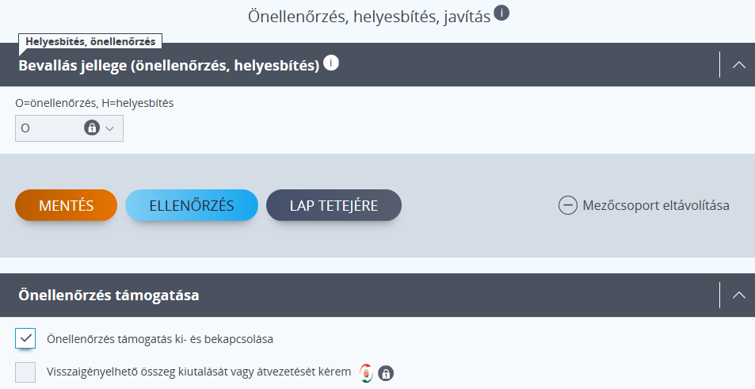
Abban az esetben, ha a „NEM HASZNÁLOM A TÁMOGATÓ FUNCKIÓT” linkre kattintunk, akkor az önellenőrzés folyamata megegyezik azzal az esettel, amikor a portálon „normál módon” létrehozott bevallásra kívánunk önellenőrzést, ill. helyesbítést beadni.
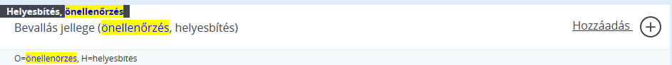
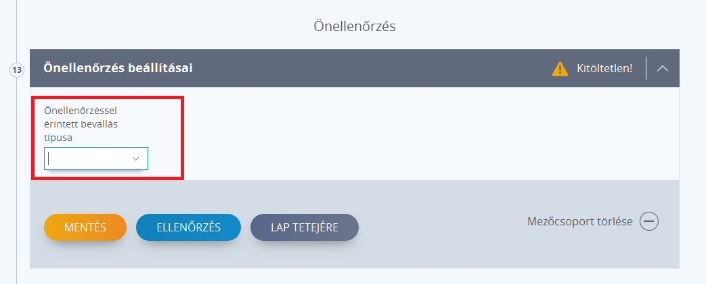
4.9. Adóév választás
A Főoldalon a bal oldali menüsávban érhető el az adóév választás funkció.
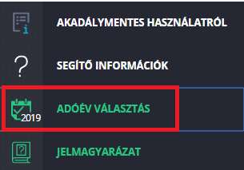
Bejelentkezés után minden esetben az aktuális adóév és az arra vonatkozó funkciók élnek. A korábbi évek elérését az Aktuális adóév kiválasztása menü biztosítja. A menüre kattintva az adóév választó képernyő jelenik meg:
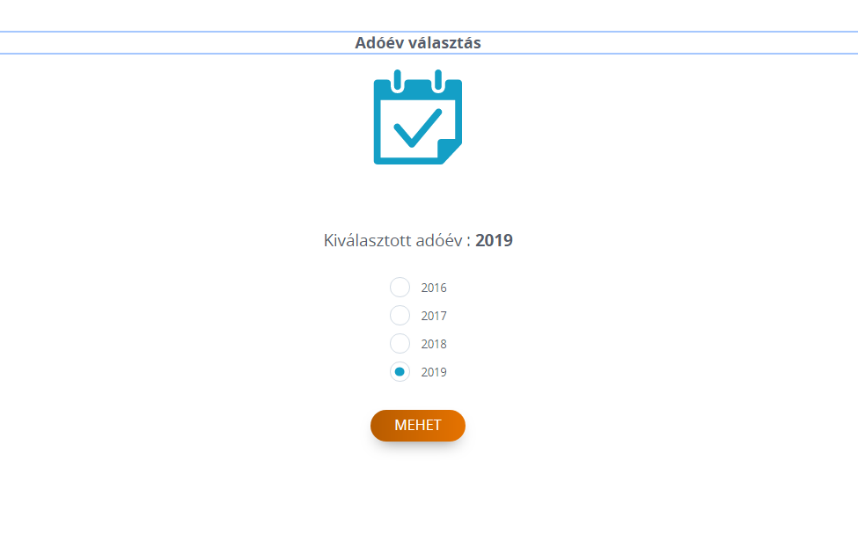
A választani kívánt adóévet bejelölve, majd az gombra kattintva egy ablak jelenik meg, ahol meg kell erősíteni az adóév választási szándékot.
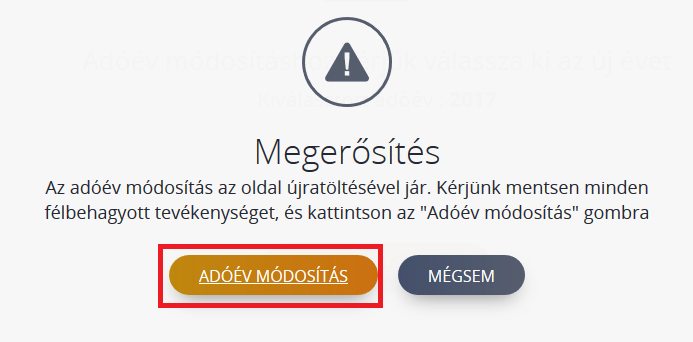
5. Képviseltek
A Képviseltek oldal csak akkor jelenik meg, ha a felhasználóhoz tartoznak képviseltek (meghatalmazók). A bejelentkezett felhasználó megfelelő jogosultságok birtokában kiválaszthatja azt az adózót, akinek nevében el akar járni SZJA bevallás és/vagy 1+1% bevallás vonatkozásában. Ennek megfelelően, a képviseltek listájában csak azok az adózók jelennek meg, akire vonatkozóan a bejelentkezett felhasználónak SZJA és/vagy EGYSZA jogosultsága van.
Ezen felül még általános információt kaphat arról, hogy az adott képviselt milyen adózói típusba (magánszemély, áfá-s magánszemély, őstermelő, családi gazdálkodó, egyéni vállalkozó) tartozik, a tervezete/bevallása és 1%-os nyilatkozata milyen állapotban van. Továbbá az adott képviselttel kapcsolatos olvasatlan értesítések darabszáma is megjelenítésre kerül.
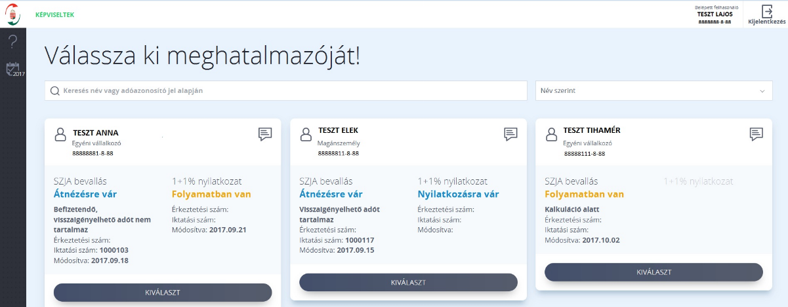
Ha egy oldalon nem fér el az összes képviselt, akkor azok előző/következő lapozással tekinthetőek meg.
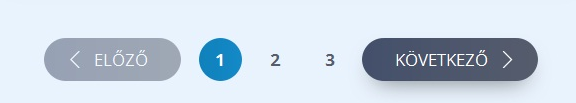
5.1. A kereső blokkban név alapján történő keresés
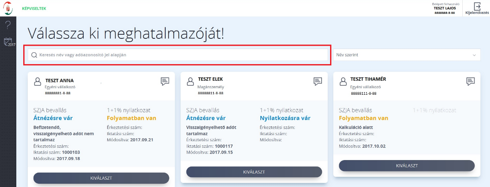
Lehetőség van a képviseltek között név és azonosító alapján történő keresésre.
Teljes név begépelése, majd a nagyító gomb vagy az ENTER megnyomása után a keresett képviselt megjelenik az oldalon.
Névtöredék beírása, majd a nagyító gomb vagy az ENTER megnyomása után azon képviseltek jelennek meg az oldalon, melyek a keresési feltételnek megfelelnek.
5.2. Azonosító alapján történő keresés
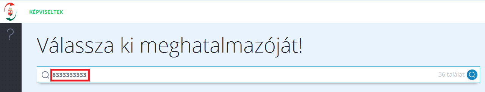
Létező azonosító begépelése és a nagyító gomb vagy az ENTER megnyomása után az azonosítóhoz tartozó képviselt megjelenik az oldalon.
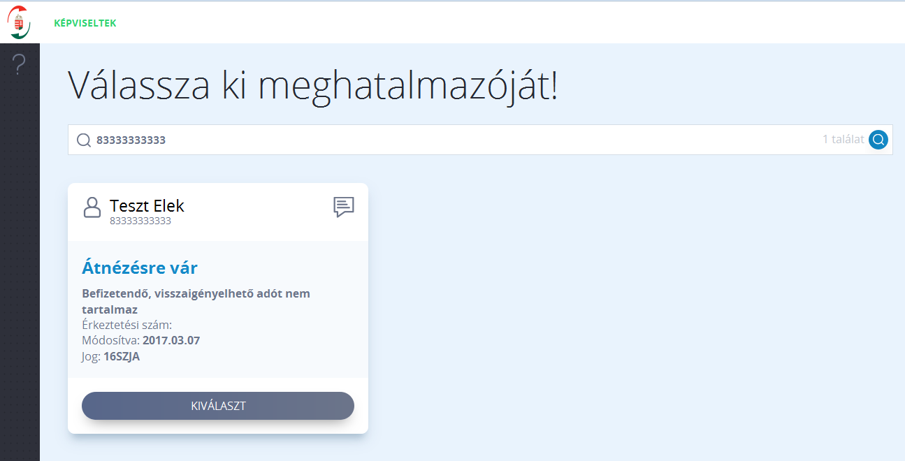
A képviseltek között nem szereplő azonosító megadása esetén üres lesz a képviseleti lista.
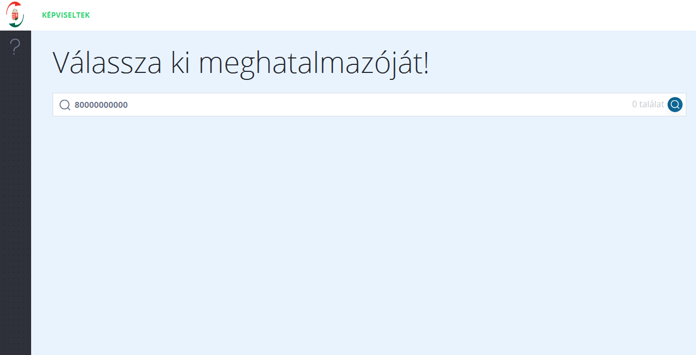
Ha kitöröljük az azonosítót, és megnyomjuk a nagyító gombot vagy az ENTER-t, akkor a teljes lista jelenik meg.
5.3. Képviseltek rendezése a különböző rendezési elvek szerint

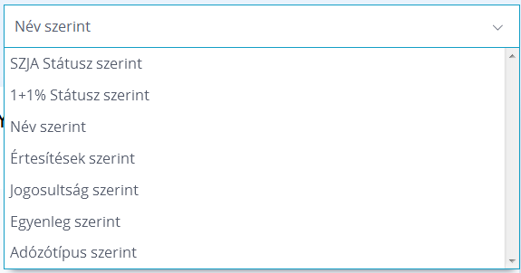
A kereső blokkban a képviselteket a következő szempontok szerint lehet rendezni:
· SZJA státusz szerinti rendezés: SZJA esetén a státusz megnevezés abc sorrendjében jeleníti meg a képviselteket.
· 1+1% státusz szerinti rendezés: EGYSZA esetén a státusz megnevezés abc sorrendjében jeleníti meg a képviselteket
· Név szerinti rendezés: a neveik abc sorrendje szerint jeleníti meg a képviselteket.
· Értesítések szerinti rendezés: az olvasatlan értesítések darabszámának csökkenő sorrendjében jeleníti meg a képviselteket.
· Jogosultság szerinti rendezés: a rendelkezésre álló jogosultság felirat abc szerinti sorrendjében jeleníti meg a képviselteket.
· Egyenleg szerinti rendezés: az egyenleg felirat abc szerinti sorrendjében jeleníti meg a képviselteket.
· Adózótípus szerinti rendezés: az adózótípus abc sorrendje szerint jeleníti meg a képviselteket
5.4. Profilválasztás
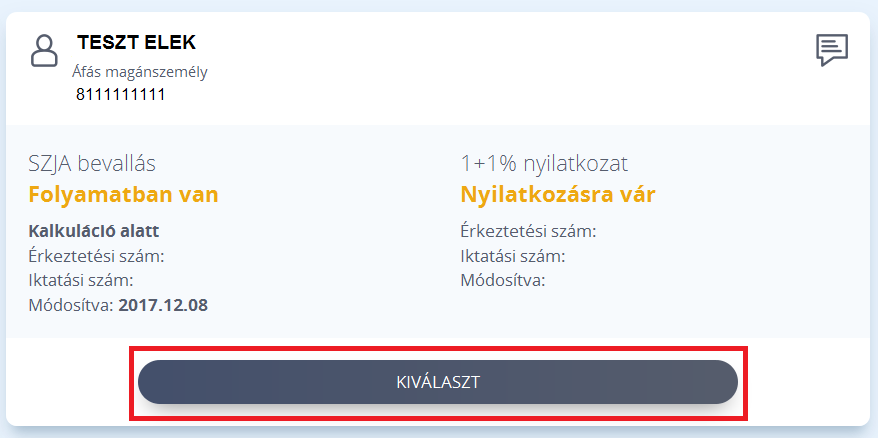
Több képviselt esetén ki lehet választani, hogy mely képviselt bevallás tervezetét vagy bevallását szeretnénk megnézni. A „KIVÁLASZT” gombra kattintva a kiválasztott képviselt Profil oldala kerül megjelenítésre. Ezen az oldalon az adott képviseltre vonatkozó funkciók végezhetők el. Az adott profilon, jogosultság függvényében – a bevallásra (19SZJA) és/vagy a rendelkező nyilatkozatra (EGYSZA) vonatkozó - blokk jelenik meg.
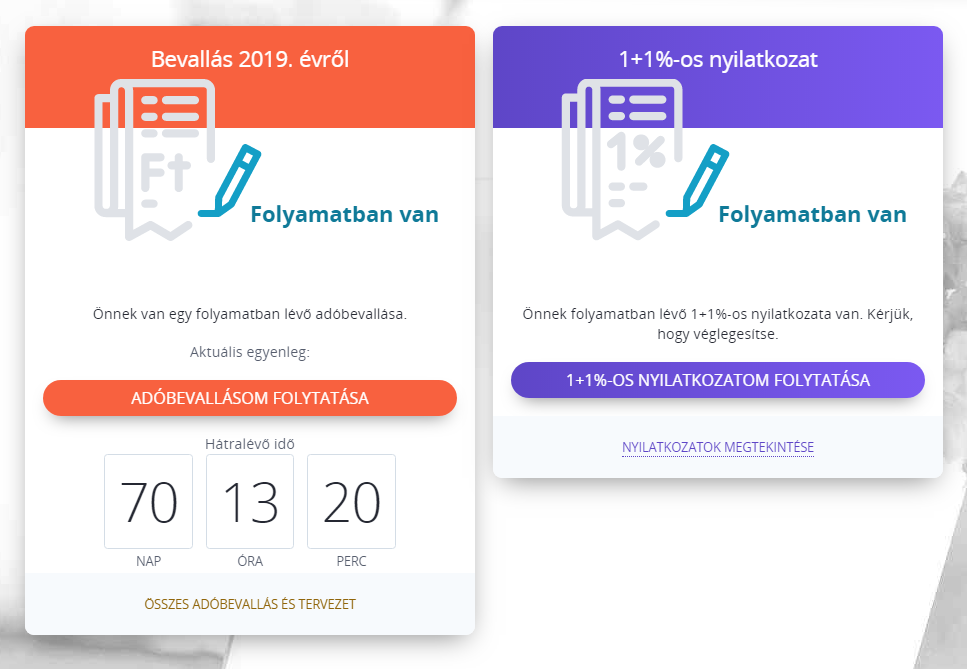
6. Értesítések
Az Értesítések funkció szolgál arra, hogy az adózók bevallásaihoz kapcsolódó, NAV-tól érkezett üzeneteket megtekinthessék. Ezek a felhasználónak saját magára vagy képviselt adózójára vonatkozó tervezetével, bevallásaival, vagy egyéb, a rendszer működésével kapcsolatos tudnivalókat tartalmaznak. Lehetőség van az értesítések listázására, olvasására.
6.1. Értesítések megtekintése
6.1.1. Az értesítés lista megjelenítése
A
Profil oldal jobb felső
sarkában az
„Értesítések”
ikonra  kattintva
jeleníthetjük meg az
értesítések
listáját.
kattintva
jeleníthetjük meg az
értesítések
listáját.

Ha érkezett üzenet, akkor az „Értesítések” ikon jobb felső sarkában látható az olvasatlan értesítések darabszáma.

Amennyiben nincs értesítés, és rákattintunk az „Értesítések” ikonra, akkor a következő üzenet jelenik meg az oldalon: „Önnek nem érkezett értesítése.”.
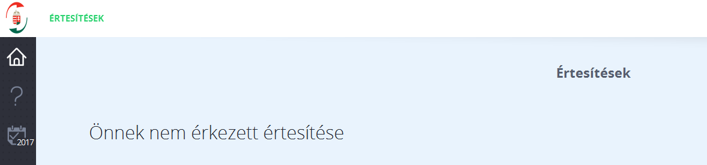
Amennyiben van értesítés, akkor az Értesítések oldal jelenik meg:
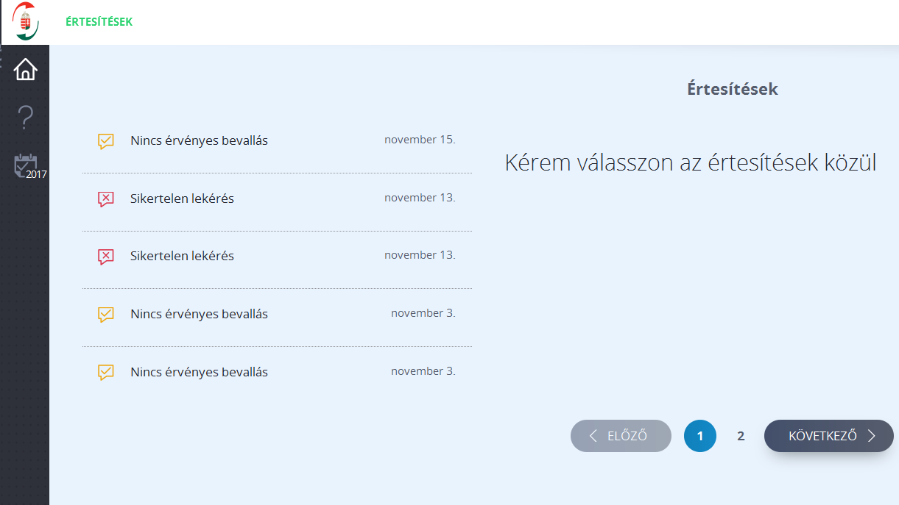
6.1.2. Lapozás az értesítések között
Több értesítés esetén megjelenik az oldalon az „ELŐZŐ” és „KÖVETKEZŐ” gomb, melyekkel az értesítések között lehet navigálni.
7. Adóbevallási dokumentumok
Ez az oldal szolgál arra, hogy a bejelentkezett felhasználó saját vagy képviseltjével kapcsolatosan listaszerűen megtekinthesse a tervezetét, a bevallásait és az 1%-os nyilatkozatait. Az oldal 3 fülre tagolódik:
· NAV által készített bevallás (Tervezet),
· SZJA bevallásaim,
· Rendelkezéseim az 1+1%-ról.
A
Profil vagy a Képviseltek
oldalon a „Dokumentumok” ikonra  kattintva jelennek
meg az adatok.
kattintva jelennek
meg az adatok.
7.1. A NAV által készített bevallás (Tervezet) fül
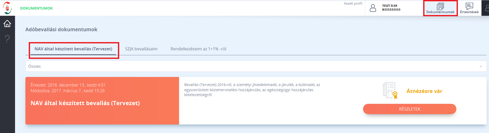
A tervezetekre az alábbi szűrési módok használhatók:
· Átnézésre vár,
· Elbírálásra vár,
· Elfogadott,
· Törölt.
A kiválasztott szűrési mód esetén csak az annak megfelelő státuszú tervezetek jelennek meg.
7.2. A Tervezetek fülön az aktuális és korábbi adóbevallási tervezet adatok megjelenítése
Egy-egy tervezet sor három blokkra tagolódik:
· az elsőben az érkezés, módosítás dátuma és a tervezet tárgya látszik,
· a második blokkban a tervezet hosszú megnevezése,
· a harmadikban pedig a státusz és a „RÉSZLETEK” nyomógomb.
Egy-egy tervezet esetén a fenti adatok jelennek meg. A „RÉSZLETEK” gomb megnyomásával a kitöltő modulba jutunk, ahol az adott tervezet adatai jelennek meg.
7.3. Az SZJA bevallásaim fülön az aktuális és korábbi adóbevallási nyilatkozatok listázása
Státusz szerinti szűrésre van lehetőség:
A választási lehetőségek:
· Folyamatban van (az aktuális bevallás szerkeszthető állapotú),
· Más által szerkesztett (ha egy adózóra vonatkozóan az aktuális bevallás szerkeszthető lenne, de azt valaki éppen módosítja),
· Beadott (az aktuális bevallás véglegesítve lett),
· Blokkolt (frissebb tervezet esetén a korábbi szerkeszthető bevallás blokkolt állapotba kerül),
· Törölt (ha a tervezet vagy bevallás bármely ok miatt lezárásra (törlésre) kerül),
· Válasszon (nincs szűrés).
A kiválasztott szűrési feltételnek megfelelő bevallások jelennek meg a listában.
7.4. Az SZJA bevallásom fülön az aktuális és korábbi bevallások megjelenítése
Egy-egy bevallás sor három blokkra tagolódik:
· az elsőben az érkezés, a módosítás dátuma és a bevallás tárgya látszik,
· a második blokkban a bevallás hosszú megnevezése,
· a harmadikban pedig a státusz és a státusztól függő feliratú nyomógomb.
A bevallás sorok a státuszoknak megfelelően különböző színekkel és ikonokkal kerülnek megjelenítésre.
A színek és ikonok jelentése:
|
megnevezés |
ikon és szín jelölés |
|
folyamatban van |
kék ceruza |
|
más által szerkesztett |
sárga szem |
|
beadott |
sárga óra |
|
blokkolt |
sárga felkiáltójel |
|
törölt |
szürke X |


A „RÉSZLETEK”, ill. a „SZERKESZTÉS” nyomógombra kattintva az adott bevallás adatai kerülnek megjelenítésre szerkesztő vagy megtekintő módban.
7.5. Az 1+1 %-os fülön a nyilatkozatok listázása
Az 1+1% fülön az aktuális és korábbi egyszázalékos felajánlások megtekintése és kezelése végezhető el.
Státusz szerinti szűrésre van lehetőség.
· Nem nyilatkozott
· Nyilatkozott
· Folyamatban van (az aktuális nyilatkozat szerkeszthető állapotú),
· Más által szerkesztett (az aktuális nyilatkozat szerkeszthető lenne, de azt valaki éppen módosítja),
· Törölt.
A kiválasztott szűrési feltételnek megfelelő nyilatkozatok jelennek meg a listában.
7.6. Az 1+1 %-os fülön a nyilatkozatok megjelenítése
Egy-egy nyilatkozat sor három blokkra tagolódik:
· az elsőben az érkezés, módosítás dátuma,a nyilatkozat tárgya látszik, a hatályos egyenleg, érkeztetési szám és iktatószám
· a második blokkban a nyilatkozat hosszú megnevezése,
· a harmadikban pedig a státusz és a státusztól függő feliratú nyomógomb látható.
A nyilatkozat sorok a státuszoknak megfelelően különböző színekkel és ikonokkal kerülnek megjelenítésre.
A színek és ikonok jelentése:
|
Megnevezés |
ikon és szín jelölés |
|
Folyamatban van |
kék ceruza |
|
Más által szerkesztett |
piros ceruza |
|
Nyilatkozott |
zöld pipa |
|
Nem nyilatkozott |
sárga óra |
|
Törölt |
szürke X |


A nyomógombra kattintva az adott nyilatkozat adatai kerülnek megjelenítésre szerkesztő vagy megtekintő módban.
8. Online kitöltő működése
Az online kitöltő felületén megjelenő mezők a számított mezők kivételével szerkeszthető tulajdonságúak.

Online kitöltő – Betöltött bevallás
Online kitöltő – Betöltött nyilatkozat
Ezen az oldalon a következő elemek jelenhetnek meg az adóbevallás vagy nyilatkozat tartalmától függően:
· Kilépés
· Középső menüsáv (Összes mező, Gyakori mezők, Keresés, Egyenleg)
· Kiválasztott mezőcsoportok
· Kiegészítő funkciók (Keresés az adóbevallásomban, Előző mező, Dokumentum kezelő, Kitöltési segédlet)
· Funkciógombok
8.1. Mezők hozzáadása
Mezők hozzáadása a középső menüsáv elemeinek segítségével történhet:
· Összes mező menü segítségével
· Gyakori mezők asszisztens segítségével
· Kereséssel
Középső menüsáv - bevallás esetén
Középső menüsáv - nyilatkozat esetén
Összes mező menü
A menü struktúrát az ÖSSZES MEZŐ gomb megnyomása után lehet elérni.
A gomb alatt megnyíló panelen a nyomtatvány sablonba tervezett összes menüpont elérhető a nyomtatványban megtervezett hierarchikus felépítésnek megfelelően.
Mezők hozzáadása bevallás esetén – Összes mező
A menüelemekre kattintva lehet egy szinttel beljebb lépni a menüben. A főmenüben a mezőcsoport címére (pl. Személyi jövedelemadó (szja)) kattintva megjelennek az alcsoportok (pl. Jövedelmek, Családi kedvezmény …), ezek közül valamelyiket kiválasztva megjelennek további alcsoportok vagy a hierarchia utolsó szintje, a mezőcsoport címek (pl. Munkáltatótól, kifizetőtől származó jövedelmek, Más nem önálló tevékenységből jövedelmek …).
Az első szint kivételével megjelenik két gomb , melyek segítségével az első, illetve az előző szintre lehet visszalépni.
A mezőcsoportok státusza
Az utolsó szinten megjelenő mezőcsoportok azok az elemek, melyek a kitöltendő mezőket foglalják magukba, ezek hozzáadhatóak, illetve szerkeszthetőek a bevallási űrlapon. A mezőcsoport hozzáadása a menüpontokra vagy a funkcióra kattintva történik. A mezőcsoport státuszáról a menüpont végén látható ikonok adnak információt:
· - a mezőcsoport még nem lett hozzáadva a bevallási űrlaphoz
· - a mezőcsoport már hozzá lett adva a bevallási űrlaphoz, kattintás után az adott mezőcsoportra ugrik.
A menüt a gomb újbóli megnyomásával vagy az gombbal lehet bezárni.
Gyakori mezők asszisztens
A középső menüsávban található gomb segítségével lehet megjeleníteni a nyomtatványba tervezett asszisztenst. Itt olyan mezőcsoportok találhatók, amelyek bizonyos tevékenységekre, embercsoportokra, élethelyzetekre jellemzőek, de a nyomtatvánnyal ellentétben egy helyre vannak csoportosítva a könnyebb kitölthetőséget biztosítva. Csak bevallás esetén lehet ezt a funkciót elérni.
Asszisztens panel – életesemények megjelenítése nagy ikonokon
A mozaikokra kattintva több életesemény is kiválasztható, majd a gombra kattintva, füles vásznon jelennek a kiválasztott témák, és alattuk a hozzájuk tartozó mezőcsoportok. A menühöz hasonlóan a mezőcsoportok innen hozzáadhatóak a bevallási űrlaphoz. A mezőcsoport státuszáról a menüpont végén látható ikonok adnak információt:
· - a mezőcsoport még nem lett hozzáadva a bevallási űrlaphoz
· - a mezőcsoport már hozzá lett adva a bevallási űrlaphoz, kattintás után az adott mezőcsoportra ugrik
Asszisztens panel - mezőcsoportok megjelenítése életesemények szerint a füles vásznon
A mezőcsoportok alatt megjelenő gomb segítségével a témaválasztóhoz lehet visszatérni, a gomb újbóli megnyomásával vagy az gombbal bezárható az asszisztens panel.
Mezőcsoportok hozzáadása kereséssel
A felhasználónak lehetősége van keresni sorszám vagy kifejezés alapján a hozzáadható mezőcsoportokban, és a találatok alapján hozzáadhat további mezőcsoportokat az űrlaphoz. A kereső panel a középső menüsávban található a Gyakori mező asszisztens és az Egyenleg között.
Keresés a sorszám alapján
Keresés a kifejezés alapján
A keresett sorszám vagy kifejezés beírása után az Enter billentyűt vagy a keresősáv jobb oldalán található gombot megnyomva megjelennek a találatok mezőcsoportonként rendezve. A mezőcsoportok hozzáadhatóak a gomb segítségével, ha még nem szerepelnek az űrlapon. Ha már az adott mezőcsoport, amiben a találatok vannak előzőleg hozzá lettek adva, akkor ezt a ikon jelzi, melyre rákattintva az adott mezőcsoporthoz navigál. Sok találat esetén csak az első öt előfordulás jelenik meg, de a keresőpanel alján lévő további 5 mutatása megjeleníti a következő öt találatot.
A keresés találatai
8.2. A bevallás kitöltése
A bevalláshoz hozzáadott mezőcsoportok megjelennek a kitöltő űrlapon. A hozzáadott mezőcsoport nevére kattintva a vezérlés a munkafelületen a kinyitott állapotú mezőcsoportra kerül, ahol láthatóak a kitöltendő mezők. A mezőcsoportok sávjaira kattintva össze lehet zárni őket majd újra kinyitni, könnyítve ezzel a bevallási nyomtatvány átláthatóságát.
Ha a felhasználó az egeret egy nyitott mezőcsoport címsorának a végén található gombra viszi, akkor a gomb előtt megjelenik az gomb. Ha a gomb kerül megnyomásra, akkor az adott mezőcsoport, ha az gomb, akkor minden mezőcsoport kerül bezárásra.
Ha a felhasználó az egeret egy nyitott mezőcsoport címsorának a végén található gombra viszi, akkor a gomb előtt megjelenik az gomb. Ha a gomb kerül megnyomásra, akkor az adott mezőcsoport, ha az , akkor minden mezőcsoport kinyitásra kerül.
Az egérrel vagy a TAB gomb segítségével a mezőkbe lehet navigálni és kitölteni azokat. A kitölthető mezők háttere fehér, a számított mezők háttere sötétebb és nem szerkeszthetőek.
A mezőcsoport törölhető a mezőcsoporthoz láblécén megjelenő gomb segítségével. Ez a gomb csak akkor jelenik meg, és a mezőcsoport akkor törölhető, ha az nem egy alapértelmezett mezőcsoport. Alapértelmezett mezőcsoportok a nyomtatványtervezés során kerültek megadásra (pl. Adózó azonosító adatai). A gombra kattintva egy megerősítő ablakot kapunk, ha az adott mezőcsoport már tartalmaz a felhasználó által beírt adatokat, üres mezőcsoport megerősítés nélkül törölhető.
Mezőcsoport törlésének megerősítése
A mezőcsoport láblécén található gomb megnyomására a fókusz a középső menüsorra ugrik, megkönnyítve ezzel mezők újbóli hozzáadását.
A bevallási
képernyő használat
8.3. Mezőellenőrzések, számítások kezelése
Mezőelhagyáskor, ha nem
változott a mező értéke, akkor nem
fut le sem a mezőellenőrzés, sem a függő mezők
számítása. Ha változott a
mező
értéke, akkor lefut az ellenőrzés
és az
újraszámítás.
Így megvalósul az az
igény, hogy pl. az Egyenleg mező mindig újra fog
számolódni, és minden
változáskor
aktualizálódik az értéke. A
jobb oldali menüben az  gombra
illetve minden mezőcsoport láblécén
található gombra
fut
le a teljes ellenőrzés.
gombra
illetve minden mezőcsoport láblécén
található gombra
fut
le a teljes ellenőrzés.
Mezőmódosítás után, ha a felhasználó elhagyja a mezőt és hibás értéket adott meg, a hibamegjelenítés csak akkor valósul meg, ha nem aktív a teljes bevallás ellenőrzése után megjelenő hibapanel.
8.4. Egyenlegek megjelenítése
Az Egyenleg panel a középső menüsávban található a keresés funkciótól jobbra. Az Egyenleg felirat gombként funkcionál, rákattintva megjelenik a tételes egyenleg adónemenként. Az gomb megnyomására feljövő ablak mindaddig a képernyőn marad, amíg újra rá nem kattint a felhasználó, vagy a vezérlőpanelen egy másik modul funkcióját nem használja.
Az egyenleg értéke minden olyan mező rögzítésekor, módosításakor újraszámolódik, ami befolyásolja az egyenleg kiszámítását, tehát nem kell külön funkciót futtatni, ahhoz hogy a panelnek az értéke aktualizálódjon.
Egyenleg panel
Kitöltés esetén, az egyenleg panelen megjelenítésre kerülnek a rendelkező nyilatkozatok összegei is (önkéntes nyugdíjpénztár, önkéntes egészségpénztár), amivel teljes körűvé válik az adózó tájékoztatása.
Egyenleg panel kinyitva – rendelkezés esetén részletek nélkül
Egyenleg panel kinyitva – rendelkezés esetén részletekkel
Csak bevallás esetén lehet az Egyenleg funkciót elérni.
8.5. Ellenőrzés – hibák megjelenítése
A teljes bevallási űrlapra ellenőrzés futtatható minden a mezőcsoporthoz tartozó alsó menüsávon megjelenő gomb segítségével, vagy a jobb oldali menüben található funkció segítségével.
Az esetlegesen felmerülő hibákat a középső menüsáv alatt jeleníti meg a hibaüzenet panelen. A hibák listázására kétféle nézetet választhat a felhasználó, az ÖSSZES HIBA MUTATÁSA nézetet, ami az alapértelmezett, és a HIBÁNKÉNTI NÉZET-et. A nézetek között a felhasználó a hibaüzenetek doboz bal felső sarkában lévő ÖSSZES HIBA MUTATÁSA / HIBÁNKÉNTI NÉZET gombbal tud váltani. Egy hiba súlyossága szerint lehet súlyos hiba, normál hiba és figyelmeztetés.
Összes hiba nézet
Ez az alapértelmezett nézet, ebben a nézetben a felhasználó lista formájában, a hiba súlyossága szerinti csoportosításban láthatja az adóbevallásában keletkezett hibákat. A csoportokat kinyitva megjelennek a hibaüzenetek, melyek minden esetben tartalmazzák a szöveges kifejtést, a súlyos és normál hiba esetén egy gombot, figyelmeztetés esetén egy gombot. A gombok a megfelelő mezőcsoporton belüli hibás mezőre navigálnak, és a hibapanel átváltják a HIBÁNKÉNTI NÉZET-be.
Ellenőrzés - hibák megjelenítése összes hiba nézetben
Hibánkénti nézet
Ebben a felhasználó egyszerre csak egy hibaüzenetet lát és a hibaüzenet panel jobb oldalán elhelyezett nyilak segítségével navigálhat az üzenetek között. Hibaüzenetek minden esetben tartalmazzák a szöveges kifejtést és a hiba súlyosságát. A hibaüzenetek alatt a hibát tartalmazó mezőcsoport kinyílik és a hibát tartalmazó mező megjelölésre kerül.
Ellenőrzés - hibák megjelenítése egyszerű nézetben
8.6. Súgó
Ahol elérhető a mezőhöz tartozó súgó szolgáltatás, ott a gomb segítségével megjeleníthető.
Súgó megjelenítése
8.7. Keresés a saját bevallásban
A jobb oldali menü első elemeként megjelenő nagyító ikon, amely közelítésre kinyílik , és gépelési lehetőséget biztosít.
Keresés a saját bevallásban
Találtat esetén lehetőség van a navigáló nyilak segítségével ugrálni a találatok között, valamint jelzi azt a nagyító ikon alatt aktuális/összes formátumban találatok számát. Ha a nagyító ikon alatt jelenik meg, akkor nincs találat. Az oldalon kékkel emeli ki az aktuális találatot, sárgával a többit.
Keresés a saját bevallásban – találatok
8.8. Előző mező
A mezők kitöltési sorrendje kerül megjegyzésre. Ezzel a funkcióval az előző kitöltött mezőre lehet visszaugrani.
Előző mező
8.9. Dokumentumkezelő menü
Ha az egeret a képernyő jobb oldalán található ikonokra húzza a felhasználó, akkor beúszik a dokumentumkezelő menü, melyből elérhető az ellenőrzés, a nyomtatás, teljes nézet, a tervezet alapját képező adatforrások, az adatbetöltés, adatkimentést végző funkciók valamint az egyes nézetek közötti váltás funkciója.
Dokumentum kezelő menü
Ellenőrzés
Az éppen aktuálisan szerkesztett bevallásra egy teljes ellenőrzést futtat a rendszer, és az esetlegesen felmerülő hibákat az ellenőrzési hiba panelen megjeleníti.
Nyomtatás
A nyomtatás funkció az aktuális webes űrlapból egy kivonatalt nyomtatási képet generál és a böngésző letöltőjét használva letöltődik az állomány. A bevallás esetén kivonatoltan készül el a pdf állomány, a nyilatkozat esetén nyomtatványképesen. Ez a pdf állomány kinyomtatható, és beküldhető az NAV részére.
Teljes nézet
A Teljes nézet funkcióra kattintva megjelenik a bevallás kivonatolt nyomtatási képe.
Bevallási űrlap kivonatolt képe
A felületen a gomb megnyomásával pdf állomány kérhető, visszatérés a tervezeti nézet vagy a bevallás megtekintő felületre a gomb segítségével lehetséges.
Nyilatkozat esetén ilyen funkció nincs a felületen.
Adatforrások
Az Adatforrások funkcióra kattintva megjelenik a tervezetben kiközölt munkáltatói adatok kivonatolt nyomtatási képe.
A felületen a gomb megnyomásával pdf állomány kérhető, visszatérés a tervezeti nézet vagy a bevallás megtekintő felületre a gomb segítségével lehetséges.
Nyilatkozat esetén ilyen funkció nincs a felületen.
Adatbetöltés
A felhasználónak lehetősége van az adóbevallását XML formátumból betölteni.
Nyilatkozat esetén ilyen funkció nincs a felületen.
Adatkimentés
A felhasználónak lehetősége van az adóbevallásait XML formátumban kimenteni.
Nyilatkozat esetén ilyen funkció nincs a felületen.
Nézetek közötti váltás (normál/kompakt)
A beviteli nézet választásához a jobb oldali menüpontok közül a nézetváltó gombot lehet használni. Az ikonon az aktív (világoskék) beviteli nézet látható, míg a szövegben megjelenő felirat arról tájékoztat, hogy milyen nézetre lehet váltani.
- ikon azt mutatja, hogy kompakt (könyvelői) nézetben vagyunk, és a felirat szerint normál nézetre válthatunk.
Váltás normál nézetre
- ikon azt mutatja, hogy normál nézetben vagyunk, és a felirat szerint kompakt nézetre válthatunk.
Váltás kompakt nézetre
8.10. Kitöltési segédlet
Ha az egeret a képernyő jobb oldalán található ikonokra húzza a felhasználó, akkor beúszik a kitöltési segédlet menü, melyből elérhetőek a kalkulátorok, információs füzetek, segítő tippek valamint a kitöltési útmutató.

Kitöltési segédlet menücsoport
Kalkulátorok
A funkcióval a NAV honlapján elérhető kalkulátorok választhatók ki. A választott kalkulátor weblapja egy új böngésző ablakba töltődik be.
Kalkulátorok
Információs füzetek
A funkció indításával egy új böngésző ablakba töltődik be a NAV honlapjára kipublikált információs füzetek linkje.
Információs füzetek
Segítő tippek
A funkcióval egy rövid bemutató indítható a kitöltéshez szükséges legfontosabb eszközökről.
Segítő tippek
Kitöltési útmutató
A funkció indításával egy új böngésző ablakba töltődik be a kitöltési útmutató.
Kitöltési útmutató
8.11. Visszatérés a profil oldalra
A kitöltő jobb felső sarkában található a Kilépés funkció.
Kijelentkezés